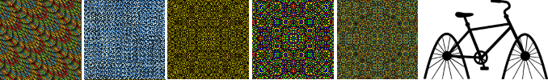
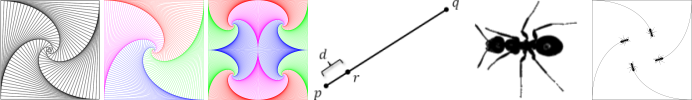

What is a Professor of Computer Science doing making art? Surely it's not Art?
And certainly he can't count it as an academic pursuit.
He's supposed to be doing research and teaching,
not futzing around with finger-painting for the mind.
Let him go to the College of Visual Art and Design
if he wants it to count as a Professional Activity.
Artists are supposed to suffer for their Art, and I'm suffering because my art is
ignored by my university. Therefore, it must be Art!

The Beauty of Modular Bivariate Quadratic Functions is a digital art installation
that displays a random sequence of procedurally generated ornamental art.
[art installation,
more information]

You can draw a lot of fun curves even if you only know how to draw
straight lines.
We start by having fun with a paper placemat and a pencil, end with the
Four Ant Problem, and do some math and programming in between.
Oh, and there's programming homework if you're up to it.
[Straight Line Curves Webpage]

As the Wordle website points out, "Wordle is a toy for generating word clouds
from text that you provide. The clouds give greater prominence to words that appear more
frequently in the source text." These Wordle images give you some idea of the flavor
of the changes in my interests and publication over the
last couple of decades.
[My Wordle Image Webpage]

Max is a Pushover is a digital media art installation created and exhibited in February 2008
by artist Max Kazemzadeh and programmer Ian Parberry at the University of North Texas Artspace
in Fort Worth, Texas. The UNT Artspace FW gallery was open from September 2005 through March 2008 and
was host to eleven avant-garde exhibitions. Max is a Pushover is a digital fusion
of real space with virtual space.
[Max is a Pushover Webpage]

This is my ASCII Art story, which stretches from 1975 to 2011,
from manual typewriters and cardpunches to computer generation,
pixel shaders, real-time animation, and color printing.
[ASCII Art Webpage]